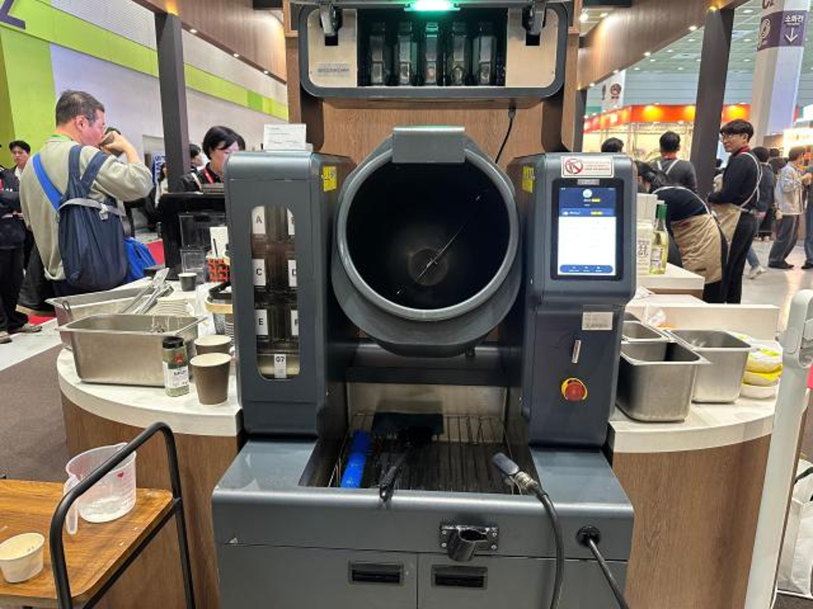

具身智能 / 厨房品类创新
CUCKOO 携 BOTINKIT 展示商用烹饪机器人，餐厅场景先于家庭厨房
机器人按预设菜谱完成炒菜、意面等操作；报道指有江南中餐馆在用，经营效果仍属企业陈述。

11月13日，CUCKOO在首尔咖啡展展示与食品科技公司BOTINKIT合作的AI烹饪机器人。Aju News现场报道描述，设备按预设菜谱依次完成烹饪，并支持盛盘、清洗相关器具等环节。CUCKOO称，江南一家中餐馆已采用该设备；该落地信息尚无独立经营数据佐证。
这类机器人先进入餐饮后厨，意味着菜谱标准化、固定工位和连续出餐等条件，正在成为商业落地的优先场景。迁移到家庭厨房仍需解决多菜并行、临时改菜、清洁维护、占地和安全责任，不能把商用演示等同于家用成熟。
Aju News｜CUCKOO 2026 首尔咖啡展现场报道 · 2026-11-13 16:17（韩国时间）Aju News｜CUCKOO 烹饪机器人现场照片 · 2026-11-13现场报道发布：2026-11-13 16:17（韩国时间）；展会于11月11—14日举行。